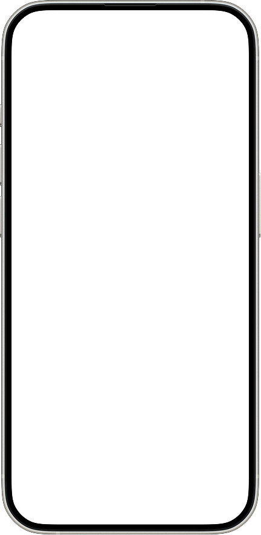
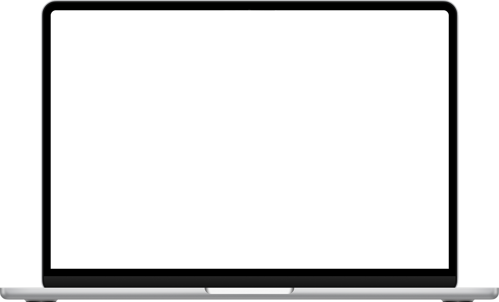

The problem with design handoffs
Translating a design to working frontend code is slower than it should be. Developers spend time on pixel-pushing — matching spacing, colours, and layouts — that doesn't require engineering judgement. Designers end up in a loop of review comments and back-and-forth checks that breaks everyone's momentum. This project set out to find where AI can step in and remove that friction, testing three distinct approaches over four weeks.
Approaches tested
3 distinct AI-to-code workflows
Goal
Reduce pixel-pushing, free developers for real work
Scope
From full app generation to single component changes
Three things slowing design-to-code down
Before testing anything, the team aligned on what "better" would actually look like. The friction wasn't in any one place — it spread across different roles and different stages of the build.
Too much time spent on visual details
Developers were translating design specs manually — matching colours, spacing, and type — work that doesn't require engineering skill.
No way to validate interactions before dev
Designers couldn't verify how something felt in-browser without waiting for a developer to build it first.
Time-consuming review cycles
Minor visual corrections required repeated back-and-forth — a comment, a fix, a review — for changes that should take minutes.
Three approaches, three different use cases
Each approach was tested on a real piece of work — not a hypothetical. That meant the trade-offs became visible quickly. What worked well in one context created new problems in another.
01
Generate the frontend entirely from AI
Used AI to generate a complete frontend from scratch — design system, components, and all — as a product demo for a potential client. Two apps were built this way, with no existing codebase to work around.
What worked
Design system and components are set up from the start — consistent tokens and styles across the whole app
Fast to spin up a working prototype that looks polished
The catch
Most teams already have a codebase — integrating AI-generated code into it is tedious and error-prone
A lot of hardcoded values that need manual fixing (e.g. hardcoded hex colours instead of CSS tokens meant light/dark mode didn't work until each one was changed)
Works best for
Testing a new concept, client demos, or starting a product completely from scratch with no existing codebase

02
Playground pages in the existing codebase
Created a sandbox section of the real codebase and used AI to build pages using existing components. Tested with a mobile version of an app that the team wanted to explore before committing to it across the product.
What worked
Builds within the real design language — components, spacing, and type all match what's already in the product
A safe space to test major changes (like a new typography system) before rolling them out app-wide
The catch
AI tends to generate a lot of mock data and local components that don't belong in the real codebase — cleaning up afterward takes time
Playground code can drift from production patterns, making it harder to port across later
Works best for
Exploring significant changes — new layouts, navigation patterns, or design system updates — before committing app-wide
03
Designer makes changes directly in code via AI agent
The designer used an AI agent alongside Figma to make targeted changes directly in the codebase, preview them locally, then push to GitHub for a developer to review and merge. Tested on a poll component redesign.
What worked
Designer can see exactly how the change behaves in the real product — no guessing from a static mockup
Developer receives a diff to review and merge, rather than having to build from scratch
The agent works within the existing codebase rather than generating parallel code
The catch
Designers don't always know if the agent is making the right kind of change — in one case, the agent was overriding CSS styles via a separate .ts file, which a developer had to flag and the designer had to roll back
Requires comfort with an IDE and some understanding of how the codebase is structured
Works best for
Surface-level changes in a legacy codebase — tweaking a component, adjusting styles — where the scope is small and well-defined

Claude Design: Approach 3 without the IDE
Midway through the project, Claude Design offered a way to do what Approach 3 does — but without the designer needing to open an IDE or read any code. You work from the visual, and hand off the resulting code changes to Claude Code.
How it works
Visual-first, code handed off behind the scenes
Claude Design lets the designer stay in the visual — describing or clicking on what to change — while Claude Code handles the actual code edits. The output is a diff the developer can review, just like Approach 3, but without the designer ever needing to touch the codebase directly.
What it's good for
Designers who want the benefits of Approach 3 without needing to learn an IDE or understand how the codebase is structured
Current limitation
Making very precise visual adjustments is harder than in Figma — the tool works better for changes at the component or layout level than for minute spacing or type tweaks
The opportunity
As tooling matures, this could become the default handoff — designer validates the change visually, code is generated and reviewed, developer merges
Let's find the best approach
The conclusion wasn't a ranking — it was a map. Each approach solves a different problem for a different type of project. The best AI-powered workflow is the one that fits what the team is already doing, not the one that forces a new process on top of an existing one.